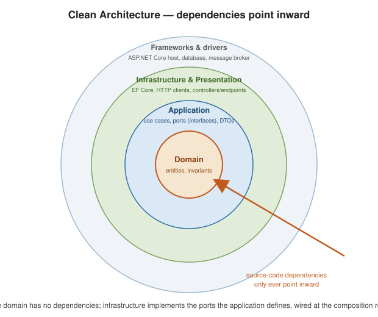

Architecture and Patterns
|
This content was generated with the assistance of AI and should be verified against the official documentation before being relied on in production. |
This page is orientation, not a patterns textbook: a short description, a small snippet, and a link for each idea. It is informed by the architecture chapters of the books in this section’s bibliography, but everything is verified against the current guidance at .NET application architecture guides.
Principles
Separation of concerns, DRY, KISS, YAGNI, and SOLID show up concretely in ASP.NET Core:
-
Single responsibility — thin controllers/endpoints that delegate to services.
-
Open/closed — add behavior via new
IEndpointFilter/IAuthorizationHandlerimplementations, not edits. -
Liskov — any registered
IPaymentGatewaymust be substitutable. -
Interface segregation — small service interfaces, easy to fake in tests.
-
Dependency inversion — depend on abstractions; the DI container supplies implementations.
// controller depends on an abstraction; wiring lives in Program.cs
public sealed class CheckoutController(IPaymentGateway gateway) : ControllerBase { /* ... */ }
builder.Services.AddScoped<IPaymentGateway, StripeGateway>();Layering and Clean Architecture
Split the solution so dependencies point inward: the domain knows nothing about the web or the database.
Shop.Domain // entities, value objects, domain services -- no dependencies
Shop.Application // use cases, ports (interfaces), DTOs -> references Domain
Shop.Infrastructure // EF Core, HTTP clients, implementations of ports -> references Application
Shop.Web // controllers/endpoints, DI wiring -> references Application (+ Infrastructure at composition root)
controller / endpoint"] P --> A["Application
use-case handler + port interface"] A --> D["Domain
entity behaviour + invariants"] A -. resolved at runtime .-> I["Infrastructure
EF Core repository implements the port"] I --> DB[(Database)]
DTOs and object mapping
Map between wire DTOs, application models, and domain entities at the edges. Options: hand-written mapping (zero magic), Mapperly (source-generated, compile-time checked), or AutoMapper (convention-based, reflection).
[Mapper]
public partial class OrderMapper
{
public partial OrderDto ToDto(Order order); // generated at build time
}See Mapperly and AutoMapper.
Cross-cutting patterns in DI
// Strategy: many implementations + a selector
builder.Services.AddKeyedScoped<IShipping, DhlShipping>("dhl");
builder.Services.AddKeyedScoped<IShipping, UpsShipping>("ups");
// Decorator: wrap a registration (Scrutor)
builder.Services.AddScoped<IOrderRepo, SqlOrderRepo>();
builder.Services.Decorate<IOrderRepo, CachingOrderRepo>();
// Factory: build per-call instances
builder.Services.AddSingleton<Func<string, IShipping>>(sp => key => sp.GetRequiredKeyedService<IShipping>(key));The Operation Result pattern (see
Error handling) pairs naturally with
ProblemDetails: the application layer returns Result<T>, the endpoint maps failure to a problem response.
CQRS and the mediator pattern
Separate write commands from read queries; a mediator decouples the endpoint from the handler and gives a place for pipeline behaviors (validation, logging, transactions).
public sealed record PlaceOrder(int CustomerId, CartDto Cart) : IRequest<Result<int>>;
public sealed class PlaceOrderHandler(IOrderRepo repo) : IRequestHandler<PlaceOrder, Result<int>>
{
public async Task<Result<int>> Handle(PlaceOrder cmd, CancellationToken ct) { /* ... */ }
}
// endpoint
app.MapPost("/orders", (PlaceOrder cmd, ISender mediator) => mediator.Send(cmd));A mediator is overkill for a small app with a handful of endpoints. See MediatR.
Vertical slices and larger structure
-
Vertical Slice Architecture / REPR (Request-EndPoint-Response): organise by feature folder, one endpoint + its request/response/handler per file. Less indirection than layered/onion for feature-heavy apps.
-
Modular monolith vs. microservices: start with modules (clear boundaries, in-process calls); split a module into a service only when it needs independent scaling or deployment. The Backend-for-Frontend pattern gives each client its own tailored API. Event-driven integration (a message broker) decouples modules/services that must not call each other synchronously. See Migration Path: From a Monolith to a Modular Monolith for the technology-neutral walkthrough of that split.
Deep dive: placing an order through the layers
The patterns above are easier to judge on one use case followed end to end. PlaceOrder touches every layer: the
endpoint translates HTTP, the application layer orchestrates, the domain enforces invariants, and infrastructure
persists. Dependencies point inward only.
// Domain: no framework references
public sealed record Error(string Code, string Message);
public sealed class Result<T>
{
public T? Value { get; }
public Error? Error { get; }
public bool IsSuccess => Error is null;
private Result(T? value, Error? error) { Value = value; Error = error; }
public static Result<T> Ok(T value) => new(value, null);
public static Result<T> Fail(Error error) => new(default, error);
}
public sealed class Order
{
private readonly List<OrderLine> _lines = [];
public int Id { get; private set; }
public int CustomerId { get; private set; }
public IReadOnlyList<OrderLine> Lines => _lines;
public decimal Total => _lines.Sum(l => l.Quantity * l.UnitPrice);
private Order() { }
public static Result<Order> Create(int customerId, IEnumerable<OrderLine> lines)
{
var order = new Order { CustomerId = customerId };
order._lines.AddRange(lines);
return order._lines.Count == 0
? Result<Order>.Fail(new Error("order.empty", "An order needs at least one line."))
: Result<Order>.Ok(order);
}
}
public sealed record OrderLine(int ProductId, int Quantity, decimal UnitPrice);
// Application: orchestrates, owns the port
public interface IOrderRepository { Task AddAsync(Order order, CancellationToken ct); }
public sealed record PlaceOrder(int CustomerId, List<OrderLine> Lines);
public sealed class PlaceOrderHandler(IOrderRepository repo)
{
public async Task<Result<int>> HandleAsync(PlaceOrder cmd, CancellationToken ct)
{
var created = Order.Create(cmd.CustomerId, cmd.Lines);
if (!created.IsSuccess) return Result<int>.Fail(created.Error!);
await repo.AddAsync(created.Value!, ct);
return Result<int>.Ok(created.Value!.Id);
}
}
// Web: translates the Result to HTTP
app.MapPost("/orders", async (PlaceOrder cmd, PlaceOrderHandler handler, CancellationToken ct) =>
{
var result = await handler.HandleAsync(cmd, ct);
return result.IsSuccess
? Results.Created($"/orders/{result.Value}", new { id = result.Value })
: Results.Problem(title: result.Error!.Code, detail: result.Error.Message, statusCode: 422);
});The handler is a plain class: a unit test passes it a fake IOrderRepository and asserts on the Result without a
web host. Adding a mediator later changes only how the endpoint finds the handler.
Cross-cutting behavior as decorators
A pipeline behavior in a mediator library is a decorator in disguise. Without a library, a decorator around the handler gives logging or transaction handling in one place:
public interface ICommandHandler<in TCommand, TResult>
{
Task<Result<TResult>> HandleAsync(TCommand command, CancellationToken ct);
}
public sealed class LoggingHandler<TCommand, TResult>(
ICommandHandler<TCommand, TResult> inner, ILogger<LoggingHandler<TCommand, TResult>> log)
: ICommandHandler<TCommand, TResult>
{
public async Task<Result<TResult>> HandleAsync(TCommand command, CancellationToken ct)
{
log.LogInformation("Handling {Command}", typeof(TCommand).Name);
var result = await inner.HandleAsync(command, ct);
log.LogInformation("{Command} succeeded: {Success}", typeof(TCommand).Name, result.IsSuccess);
return result;
}
}Enforcing the dependency rule
Layering is a convention until a test enforces it. With the NetArchTest.Rules package, one test fails the build when the domain starts depending on infrastructure:
var result = Types.InAssembly(typeof(Order).Assembly)
.ShouldNot()
.HaveDependencyOn("Microsoft.EntityFrameworkCore")
.GetResult();
Assert.True(result.IsSuccessful);When the layers are too many
A CRUD screen that reads a table and returns it gains nothing from a domain model, a repository and a handler. Keep
those layers for the parts of the system with real rules (pricing, stock, fulfilment), and let simple read endpoints
query the DbContext directly with a projection; the two styles coexist in the same project, which is the practical
argument for vertical slices over a single global structure.